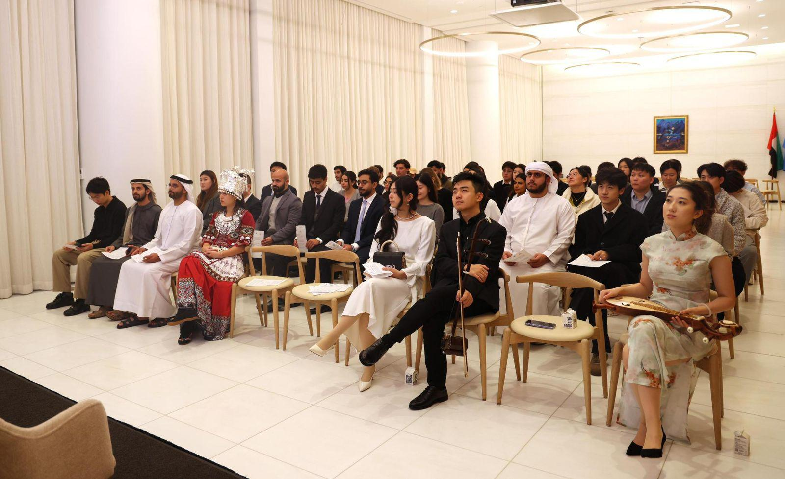

Each roundtable gathers 15–40 participants around one China–Gulf question — moderated, off-the-record where needed, and always with youth voices at the center. Sessions run in English, Mandarin, or Arabic depending on the room.

Illustrative themes — the 2026 series is being curated now.